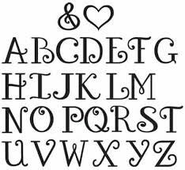
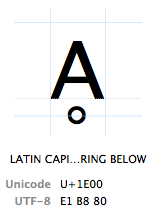
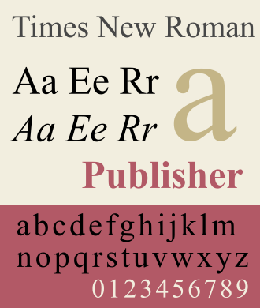

Модуль 7 - Теорія
Робота зі шрифтами
Існує поняття символу і графічного відображення символу, яке називається гліф /glyph/. Наприклад символу "смайлик" відповідає гліф 🙂. Іноді зображення (гліфи) різних символів можуть збігатися, як у випадку символу англійської та кириличної літери A. Зазвичай один символ має цілий набір гліфів - для сатиричного і заголовного відображення, для імітації машинопису і рукописи.
Набір гліфів (зображень символів) одного стилю і їх поєднань називають шрифтом - font face.
Всередині одного стилю гліфи можуть відрізнятися товщиною ліній (font-weight) або мати варіант гліфів з додатковим нахилом (font-style). Група шрифтів з такими відмінностями утворюють групу в межах одного шрифту (font-family, не плутати з сімейством шрифтів на зразок sans). Так як на практиці, вказуючи в CSS властивість font-family, ми застосовуємо тільки один варіант набору гліфів, то далі скрізь буде використовуватися термін шрифт по відношенню до font-face і font-family.
Unicode
Всі відомі людству символи (символи мов, математичні знаки, карткові символи, позначення планет і т.д. і т.п.) зібрані та описані стандартом, званим Unicode. У цьому стандарті кожен символ має офіційне іменування (наприклад, «latin capital letter a») і код (code point) - число від 0 до 10FFFF.
UTF
Іноформацію в мережі, в тому числі і глобальної мережі internet, передається в бінарному вигляді (тобто може бути описана тільки у вигляді 0 або 1).
UTF (Unicode Transformation format) - це спосіб кодування нулів і одиниць так, щоб будь-який комп'ютер міг дізнатися який саме код Юникода (code point) міститься в наборі з 8-ми (UTF-8), 16-ти (UTF-16) або 32-х (UTF-32) біт.
| character | encoding | bits |
|---|---|---|
| A | UTF-8 | 01000001 |
| A | UTF-16 | 00000000 01000001 |
| A | UTF-32 | 00000000 00000000 00000000 01000001 |
UTF ми зобов'язані вказати в meta charset, щоб браузер розумів скільки біт потрібно зібрати в групу (як правило 8), щоб прочитати код юнікода на цій сторінці. Коли браузер прочитає послідовність 0 і 1 як набори символів Юнікоду правильно, то браузеру знадобиться знайти отриманого символу відповідний гліф. Гліфи не зберігається окремо, а зібрані в шрифти. І це означає, що браузер повинен вибрати шрифт.
Детальніше про кодування символів можна подивитися тут
Сімейства шрифтів
Шрифти зібрані в сімейства. За замовчуванням, якщо жоден інший шрифт не заданий, браузер використовує шрифт з сімейства sans - "Times New Roman".
Якщо повідомити браузеру, що ми хочемо шрифт з іншого сімейства, наприклад з сімейства шрифтів без зарубок - sans-serif, то браузер підключить і такий шрифт. Але який саме це буде шрифт - ми передбачити не зможемо. Тому браузер звернеться до операційної системи користувача і попросить ОС надати шрифт обраного сімейства.
Mac, Linux і Windows містять сімейства шрифтів, які збігаються з родинами браузера: sans, sans-serif, fantasy, cursive і system-ui. ОС обов'язково має в кожному сімействі шрифт, обраний шрифтом за замовчуванням. Саме його - шрифт за замовчуванням, і отримає браузер, коли вкаже сімейство. І хоча відомо, які шрифти встановлені в системі, додавання і вибір шрифта залишається за користувачем.
Мільйони сайтів з одним шрифтом "Times New Roman" були б, напевно, занадто нудні, а також їх важко було б виділити і запам'ятати. Тому дизайнери працюють, створюючи шрифти, а розробники браузерів в свою чергу, додали в CSS можливість ці шрифти підключати.
Навіть якщо ви купуєте шрифт для особистого використання, то такий шрифт не можна застосовувати на веб-сторінці, тому що будь-який користувач може завантажити собі цей шрифт зі сторінки безкоштовно. Якщо ж розробник підключив шрифт, і не переконався, що ліцензія дозволяє цей шрифт використовувати для публікації в мережі, то вся відповідальність за неправове використання шрифту, лягати на розробника. Тому в сумнівних випадках краще підібрати шрифт зі схожим зображенням зі свідомо законних джерел, наприклад сервісу Google Fonts.
Пошук шрифту і підключення до селектору
Для того щоб деякого селектору задати шрифт або сімейство шрифтів застосовують CSS-властивість font-family. Синтаксис властивості дозволяє вказати через кому не один шрифт, а перерахувати кілька шрифтів і задати сімейство шрифтів. При цьому відображатися буде перший шрифт, який браузер зможе отримати від ОС. Порядок пошуку відповідає потоку виконання - браузер буде зчитувати зліва направо вміст перерахування.
Розглянемо наступний запис:
element {
font-family: Roboto, Verdana, sans-serif;
}Браузер почне шукати Roboto і в разі невдачі перейде до Verdana. Якщо відсутня Verdana, потік виконання добереться до sans-serif і операційна система поверне шрифт за замовчуванням.
Підключення шрифту, відсутнього в ОС
Користувачам довелося б встановлювати шрифти в систему кожного разу, коли розробник сайту застосував несистемний шрифт. Позбавити від цієї проблеми допоможуть директиви CSS @font-face або @import, також можна використовувати HTML тег підключення зовнішніх ресурсів link. За допомогою цих коштів браузер має можливість підключати шрифт незалежно від ОС із зовнішнього джерела: файлу або мережевого ресурсу.
Розглянемо приклад підключення.
p {
font-family: "Web font", Helvetica, Tahoma, sans-serif;
}
@font-face {
font-family: 'Web font';
src: url('webfont.woff2') format('woff2'),
url('webfont.ttf') format('truetype'), /* Только если нужна поддержка старых Android, иначе закомментировать */
url('webfont.woff') format('woff');
font-weight: normal;
font-style: normal;
}Як підключити кілька файлів одного шрифту і використовувати одну назву шрифту
Досить часто, веб-шрифт це кілька файлів: один файл - одне зображення (файл_1 - щільність 400 нормальний; файл_2 - щільність 400 італік, і т. Д.). А хочеться всюди при вказівці шрифту використовувати одне ім'я, без згадки в слів normal, italic і т.п., а вказувати це у відповідних CSS-властивості. Підключаємо кілька файлів шрифту із зазначенням одного і того ж імені, але різних font-weight і font-style.
@font-face {
font-family: 'Web font'; /* назва одна */
src: url('webfont8321.woff2'); /* різні файли */
font-weight: 400; /* різна вага/жирність */
font-style: normal;
}
@font-face {
font-family: 'Web font'; /* назва одна */
src: url('webfont___1.woff2'); /* різні файли */
font-weight: 700; /* різна вага/жирність */
font-style: normal;
}Розміщення підключається шрифту
Існує два основних способи розмістити підключається шрифт - використовувати місце на тому ж сервері де зберігається сайт або використовувати віддалене підключення, тобто шрифти будуть перебувати на інших серверах, не пов'язаних з доменним ім'ям сайту.
Використання віддаленого підключення з серверів служби CDN або Google Fonts дозволяє обходити обмеження браузера на кількість звернень до одного сервера. Висока швидкість доступу до платних сервісів CDN забезпечить швидке завантаження. У той же час завантаження з локального сайту може виявитися кращою, якщо кількість звернень до сервер не ВИЛИКО.
Для оцінки вибору того чи іншого способу підключення необхідно вивчити швидкість завантаження сайту за допомогою вбудованих інструментів панелі розробника (Ctrl + Shft + E або F12 і вкладка Network).
Якщо потрібно взяти шрифти з Google Fonts, але підключати їх зі свого хоста, є google-webfonts-helper — чудовий сервіс, який дозволить завантажити шрифти, і покаже код як їх оптимальніше всього підключати (якщо забути про FOUT).
Перетворення файлу шрифту
Іноді в верстці виникає проблема - є вихідний шрифт в одному з форматів, а для публікації в веб необхідно використовувати шрифт в іншому форматі. Існує ряд сервісів, які здійснюють конвертацію. За цим посиланням можна прочитати огляд найбільш популярних конверторів online. Слід врахувати, що подібні перетворення часто порушують закон (заборона на модифікацію) і майже завжди призводять до втрати якості.
Додаткові матеріали
Абсолютні і відносні одиниці CSS
Для того щоб зображення коректно відображалося на екранах різного дозволу використовується поняття CSS-пікселя. Фізичний піксель може бути будь-якого розміру, (в екранах retina фізичний піксель менше звичайного і ОС формує групи, з якими програми, в тому числі і браузер, працює як зі звичайними пікселями).
Турботу про зв'язок пікселя CSS і фізичного пікселя бере на себе операційна система. Розробник браузерного додатки може сприймати CSS піксель як найменший елемент, який браузер здатний відобразити.
При масштабі браузера в 100%, один CSS-піксель точно дорівнює одному пікселю пристрою. Якщо масштаб змінюється, то браузер робить перерахунок розміру пікселя, а не їх кількості. На практиці це призводить до того, що 5 пікселів при зменшенні масштабу в два рази (zoom 50%) змінять свої розміри до 2,5 пікселів і браузер змушений буде округлити це значення до 3px. В результаті розмір елемента зміниться - до розмірів додасться 1 піксель і це може зруйнувати верстку (елемент може перескочити на інший ряд).
Щоб уникнути подібної проблеми були створені відносні величини. Браузер при розрахунку у відносних одиницях збереже пропорції так, що зайвий піксель не зможе з'явитися. Проблемою залишається властивість border, тому що тільки цій властивості box-model можна задати відносний розмір.
Проблема фіксованих одиниць для border має кілька рішень. Одне з них це використання властивості box-sizing: border-box; Це властивість перевизначити спосіб розрахунку розміру блоку.
Абсолютні: px mm, cm, pt, pc
Тут все просто - треба використовувати px, крім випадку верстки сторінки для друкованого пристрою (наприклад, будь-які бланки). Тоді доречно використовувати pt (друкарський пункт) або pc (друкарський піку). Одиниці cm і mm присутні в стандарті тільки для підтримки старих сайтів.
| unit | px |
|---|---|
| 1mm | 3.8px |
| 1cm | 38px |
| 1pt | 4/3px |
| 1pc | 16px |
Відносні:%, em і rem, vh і vw
Використання em занадто складно - це властивість використовує для розрахунку своєї величини розмір шрифту батьківського контейнера, що ускладнює модифікацію і підтримку коду. Величина vw погано підтримується браузерами. Тому найбільш використовувані - це%, rem і vh. Розглянемо їх докладніше.
%
Потрібно завжди з'ясовувати від якого значення буде обчислюватися розмір. Найбільш важким є обчислення висоти в box-model:
| Щоб отримати величину в % для | за основу обчислення треба взяти ... |
|---|---|
| height | height батьківського контейнера |
| padding и margin | width батьківського контейнера |
| border | не використовує % |
rem
Тільки розмір шрифту, заданий в тезі html може змінити значення rem. За замовчуванням браузер встановлює величину шрифту в 16px (хоча це може змінити користувач). Тому при використанні rem обов'язково вкажіть розмір шрифту в html явно. При використанні на сторінці rem не успадковується ні від чого більше. Тому задавши в html фонт розміром 20px можна розраховувати, що 2rem будуть завжди рівні 2 * 20px = 40px.
vh
Розмір висоти viewport або, простіше кажучи - 100vh заповнить екран по висоті повністю. Цю особливість цієї величини використовують у випадках, коли потрібно розмістити контент на весь екран (наприклад, такий прийом часто використовують для фотографій на Лендінгем сторінках). Використання менших розмірів цього значення ускладнює той факт, що невідомо кількість пікселів, що виявилося в 50vh. Очевидно, що це буде половина екрану. Але це 384px проти 512px для висоти екранів 768px і 1024px. Такий розкид не підходить для формування складних конструкцій.
Таблиці
Якщо контент виглядає як пара "ключ: значення", то це причина використовувати таблиці. Таблиці дозволяють відобразити дуже складні зв'язку, розміщуючи в осередках будь-який контент. Вони мають свої правила CSS для оформлення зовнішнього вигляду, що відрізняються від правил для звичайних елементів.
Не дивно, що багато років тому таблиці використовувалися для верстки сторінки цілком. Цю практику послідовно переслідують всі пошукові сервіси, підтримуючи рейтинг сайтів з семантичної розміткою і знижуючи рейтинг сайтів за табличній версткою. Однак існую ситуації, коли така верстка доречна - створення електронних листів і верстка сайтів під IE6 (в основному для Китаю).
Синтаксис
Таблиця починається і закінчується тегами table. Потім слід перший нащадок тега table - тег tbody Як правило це тег не вносять в html код, тому що браузер автоматично підставить його в будь-якому випадку. Далі може розташовуватися необов'язкове опис всієї таблиці caption. tfoot позначає групу рядків таблиці в області нижнього колонтитула, а thead позначає групу рядків таблиці в області заголовка.
Мінімальна таблиця складається з одного ряду - тега tr. Ряд не повинен бути порожнім, тобто в ряду повинна бути хоча б одна осередок - тег td (або th - осередок-заголовок). Відносно рядів і осередків діють такі правила:
- число осередків в кожному стовпці має бути однаково з числом осередків в інших стовпцями таблиці
- число осередків в кожному ряду повинна бути однаково з числом осередків в інших рядах таблиці
See the Pen module-7-simple-table by GoIT ( @GoIT-fe) on CodePen.
Правило рівності числа осередків в рядках і стовпцях можна скасувати, але можна обійти, використовуючи злиття осередків в колонках за допомогою атрибута colspan і використовуючи злиття осередків в рядах за допомогою атрибута rowspan. Візуально правило рівності числа осередків буде порушено, але браузер враховує осередки в об'єднаних групах так, як якщо б груп не було.
Використовувати правила colspan і rowspan нескладно. Потрібно визначити групу осередків для злиття і потім в самій верхній і лівій клітинці групи задати атрибут з числом осередків вимагають об'єднання справа / colspan / і знизу / rowspan /. Після цього обов'язково потрібно видалити стали непотрібними осередку справа і знизу в кількості на одиницю менше значення colspan або rowspan.
See the Pen module-7-table-colspan by GoIT ( @GoIT-fe) on CodePen.
CSS - властивості для таблиць
Таблиці мають особливі правила оформлення. Визначено дві абсолютно різні моделі border залежать від значення властивості border-collapse
| border-collapse: | правила |
|---|---|
| separate |
|
| collapse |
|
See the Pen module-7-table-css-border by GoIT ( @GoIT-fe) on CodePen.
Додаткові матеріали
Форми
Форми - це інструмент HTML для взаємодії користувача з сайтом.
Форми використовуються, щоб користувач міг ввести якісь дані: написати коментар, вибрати товар і сплатити за нього кредитною картою, підібрати відповідний маршрут на карті тощо.
Усе це можливо, завдяки умінням браузера з допомогою форм отримувати дані користувача, а потім самостійно їх обробляти або пересилати на обробку серверу.
Вивчення обробки даних виходить за рамки нашого курсу, оскільки вимагає знання браузерных мов програмування (курс JavaScript) або серверних мов програмування (курси PHP, Java, Node).
Коли говорять про вебформи, мають на увазі тег form і пов'язані з ним теги: input, select, label тощо. Назву вебформи вони отримали, бо тег form об'єднує інформацію в групу і підказує браузеру, куди ці дані відправити (атрибут action) і яким саме способом здійснити відправку (атрибут method).
- адреса відправки форми (значення властивості action тега form)
- метод відправки форми (значення властивості method тега form)
- елементи введення (input, textarea, select тощо)
- кнопка відправки форми (button або input з атрибутом type="submit")
See the Pen module-7-simple-form by GoIT ( @GoIT-fe) on CodePen.
Методи передачі даних get і post
Браузер має декілька методів для відправки запиту — цей механізм, вбудований в теги <a> і <img>. Браузер знаходить атрибут href або src, отримує з них рядок з url, і звертається по вказаному в url протоколу до ресурсу локального або віддаленого (через звернення до сервера).
Схожий, але потужніший механізм, вбудований в тег form. Цей механізм не використовує готовий рядок, подібно до рядка href або src, а формує такий рядок самостійно.
Ось порядок, в якому відбувається створення рядка запиту по протоколу HTTP:
- З допомогою атрибуту
actionвказується адреса, якою передаватиметься запит. - З допомогою атрибуту
methodвибирається один з 2-х варіантів HTTP методів:GETабоPOST. МетодGETу браузерах встановлений усталено, і його спеціально вказувати немає потреби. МетодPOSTнеобхідно вказувати, якщо дані, що передаються, містять конфіденційну інформацію, наприклад, логін і пароль. - Після спеціального знаку роздільника, в рядку слідують пари
"ключ: значення". - Атрибут відправки
submitзапустить перевірку заповнення форм і, у разі успіху, закінчить формування рядка і передасть його браузеру.
Якщо використати метод GET, то увесь підготовлений рядок буде видимим у браузері - див. малюнок. Якщо використовується метод POST, то видимим буде тільки частина рядка, так званий заголовок. Власне метод GET і є відправкою заголовку запиту, без підключення тіла повідомлення, яке здійснюється в методі POST.
При верстанні макету як адресу використовують #, оскільки хеш адресує запит на цю ж сторінку. Тобто # використовується тимчасово, до робіт, пов'язаних з підключенням сайту до бекенду або до наповнення його контентом.
Для знайомства з роботою форми створіть файл index.html на своєму комп'ютері та скопіюйте в нього код форми з прикладу. При введенні даних в полі та подальшому натисненні на кнопку "submit" сторінка перезавантажиться і в адресному рядку браузеру буде вказане:
Після імені файлу з'явиться знак питання, потім буде записано name=value. Де властивості name відповідає значення name, а властивості value значення, введене користувачем.
Якщо вказаний атрибут placeholder, то його значення підказує, що необхідно ввести, але якщо з'явиться курсор (подія focus) текст підказки зникає. Спробуйте ввести інший текст, відмінний від слова value і переконаєтеся, що в рядку браузеру також відбувається зміна. Потім змініть значення властивості name на будь-яке слово — текст рядка браузеру знову зміниться.
Важливо уважно відстежувати заповнення тегів input атрибутом name. Приклад демонструє, що відсутність цього атрибуту ускладнює одержувачеві розбір вмісту форми (відкрийте його в codepen).
Якщо форма досить велика, і не усі поля в ній обов'язково мають бути заповнені, відновити зв'язок полів і їхніх значень, створених користувачем, неможливо.
Спробуйте в прикладі замінити усталене value на довільні (для імені та прізвища). При цьому заповніть тільки одне з полів. Буде важко зрозуміти, що є ім'ям, а що прізвищем.
See the Pen module-7-names-in-form by GoIT ( @GoIT-fe) on CodePen.
Тег input
Тег input залежно від значення властивості type змінює форму введення.
| Значення type | Опис | Тег | Вид |
| button | Кнопка | <input type="button" value = "button"> | |
| checkbox | "Чекбокс" Вибір будь-яких варіантів - від одного до усіх (вибір здійснюється тільки для input з однаковими значеннями властивості name) name) | <input type="checkbox" name="chekbosesGroup"> | |
| file | Вибір файлу | <input type="file"> | |
| hidden | Невидиме поле | <input type="hidden"> | |
| image | Зображення як кнопка | <input type="image" src = "https://image.ibb.co/gn9Nma/button.png"> | |
| password | Поле для введення пароля (символи, що вводяться, зображаються чорними кружечками) | <input type="password" name="pass"> | |
| radio | Вибір тільки одного з варіантів (вибір здійснюється тільки для input з однаковими значеннями властивості name) name) | <input type="radio" name = "radiosGroup"><input type="radio" name = "radiosGroup"> | |
| submit | Кнопка відправки форми (для написання тексту вказати значення властивості value) | <input type="submit" value = "Submit"> | |
| text | текстове поле введення | <input type="text" name="anyText"> | |
| color | Вибір кольору (при клацанні мишею по палітрі) | <input type="color"> | |
| date | Вибір дати | <input type="date"> | |
| datetime | Вибір дати та часу | <input type="datetime"> | |
| datetime-local | Вибір місцевого часу | <input type="datetime-local"> | |
| Введення електронної пошти | <input type="email"> | ||
| number | Введення числа( можна вказувати min, max, step) | <input type="number"> | |
| range | Введення діапазону( можна вказувати min, max, step) | <input type="range"> | |
| search | Поле пошуку | <input type="search"> | |
| tel | Введення телефону | <input type="tel"> | |
| time | Введення часу | <input type="time"> | |
| url | Введення вебадреси | <input type="url"> | |
| month | Введення місяця | <input type="month"> | |
| week | Введення неділі | <input type="week"> |
Select
Для вибору одного з декількох варіантів, окрім checkbox використовується конструкція select-option. У тегу select вказується значення name та інші властивості. Кожен з варіантів для вибору вказується в тегу option.
See the Pen module-7-select-option by GoIT ( @GoIT-fe) on CodePen.
Textarea
Для введення текстових даних, в яких декілька рядків, використовується тег textarea.
See the Pen module-7-textarea by GoIT ( @GoIT-fe) on CodePen.
Placeholder, усталене значення.
У деяких випадках необхідно вказати усталене значення. Для цього в тегах input необхідно вказати значення властивості value, для тега textarea - поставити усталене значення між тегами, для конструкції select-option - вказати властивість selected у відповідному елементі option.
Зручним інструментом є можливість написати підказку про те, які дані необхідно вносити у форму. Таку підказку можна реалізувати з допомогою властивості placeholder. Цю властивість можна вказати практично у будь-якому елементі форми, де є текстове введення.
Відмінністю між placeholder і value з selected в тому, що при появі курсора (подія фокус може бути здійснена мишею або клавіатурою (кнопкою tab) текст placeholder зникає, а текст value доведеться видалити. placeholder не є значенням input.
See the Pen module-7-default-placeholder by GoIT ( @GoIT-fe) on CodePen.
Наприкінці розглянемо приклад, як форми взаємодіють з сервером. У прикладі форма запропонує заповнити адресу, заголовок і тіло для електронної пошти. З допомогою JS з елементів форми (читається name і value), формується рядок, що відповідає готовому поштовому повідомленню.
Для відправки з допомогою поштового сервера необхідно ввести тільки ці ідентифікації. Натомість JS викличе ваш усталений поштовий клієнт (якщо він не встановлений, то ваша ОС запропонує установку) і заповнить лист вмістом форми з браузера. Для відправки з допомогою вашого облікового запису на поштовому сервері залишиться натиснути кнопку "Send".
Деякі мови програмування, наприклад PHP, уміють обробляти дані форм без попереднього перетворення з допомогою JS. Саме для PHP дуже важливо дотримуватися усіх правил заповнення форм, передусім, стежити за атрибутом name.
See the Pen module-7-send-email by GoIT ( @GoIT-fe) on CodePen.